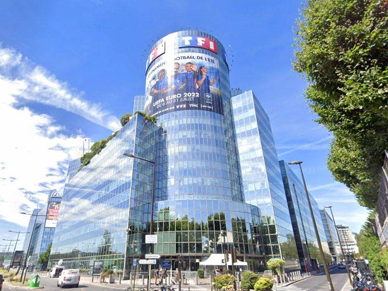
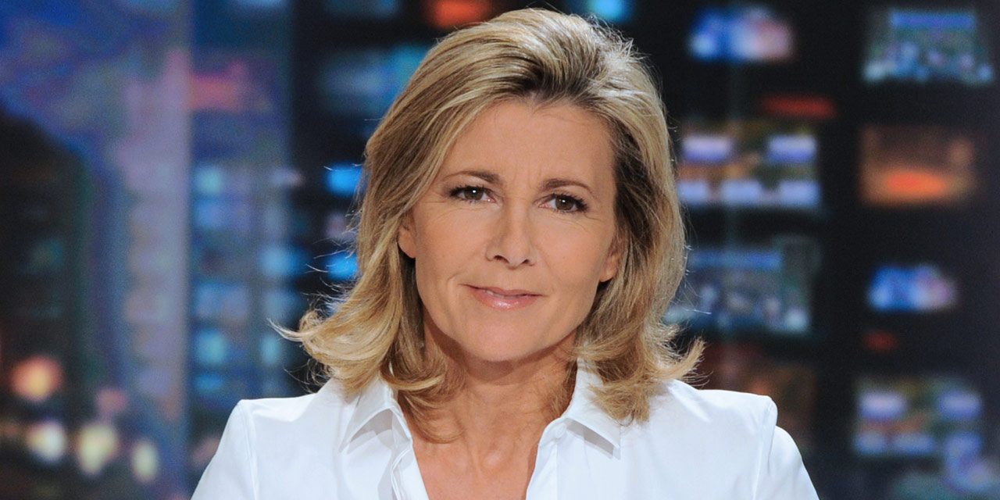
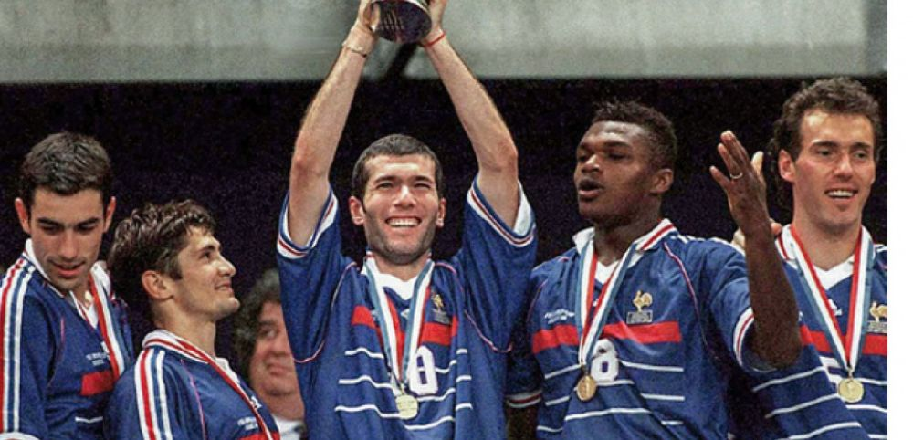
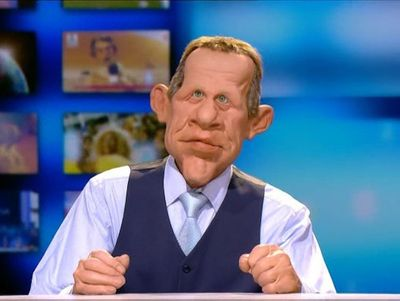
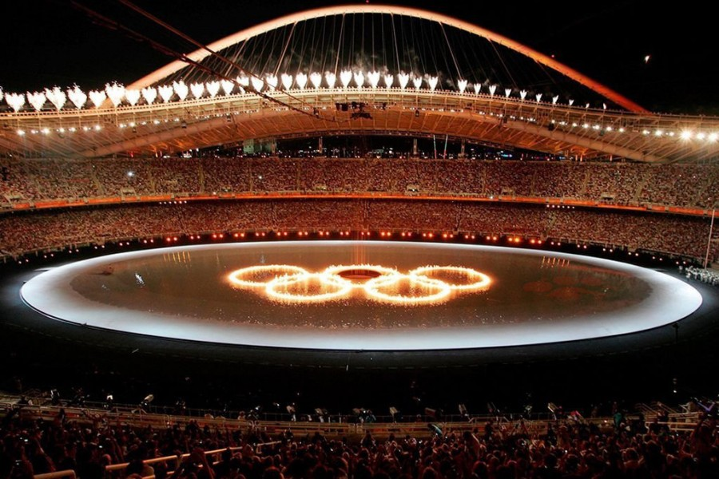

TF1, l'une des principales chaînes de télévision françaises, a été créée en 1975 suite à la fusion de la première chaîne de l'ORTF et de la société Télécip. Depuis sa création, TF1 a joué un rôle important dans la diffusion de programmes variés, allant des émissions d'information aux séries télévisées populaires, contribuant ainsi à façonner la culture télévisuelle en France.

Diffusion 1er JT : 1975
La première édition du journal télévisé de TF1 a eu lieu en 1975, marquant un moment historique pour la chaîne. Présenté par Yves Mourousi et Léon Zitrone, ce tout premier journal a inauguré une tradition d'information quotidienne à la télévision française.

Diffusion Coupe du Monde : 1998
La diffusion de la Coupe du Monde en 1998 a été un moment marquant pour TF1, la chaîne de télévision française. En tant que diffuseur officiel de l'événement, TF1 a offert aux téléspectateurs une couverture exhaustive de chaque match et des moments forts de la compétition.

Les Guignols de l'info : 1988
L'émission "Les Guignols de l'info" a marqué l'histoire de la télévision française depuis ses débuts en 1988. Diffusée sur la chaîne Canal+, cette émission satirique utilisait des marionnettes pour parodier les personnalités politiques, médiatiques et sportives de l'époque.
"Les Guignols de l'info" se sont rapidement imposés comme une référence incontournable de l'humour politique. Leur ton irrévérencieux et leurs sketches mordants ont souvent suscité des réactions passionnées et des débats. La série a réussi à créer des personnages iconiques tels que Jacques Chirac, Nicolas Sarkozy, François Hollande, et bien d'autres.

Diffusion NRJ Music Awards sur TF1 : 2000
La diffusion de la cérémonie des NRJ Music Awards est un événement annuel très attendu dans le paysage musical français. Lancée en 2000 par la radio NRJ, cette cérémonie récompense les artistes qui ont marqué l'année écoulée dans différentes catégories, telles que "Artiste masculin français", "Artiste féminine internationale" .
Lancement Koh Lanta : 2001
La diffusion de l'émission "Koh-Lanta" depuis 2001 a captivé les téléspectateurs français et est devenue un incontournable du paysage audiovisuel. Cette émission de téléréalité, créée par Denis Brogniart et produite par Adventure Line Productions, met en scène un groupe de candidats qui sont confrontés à des défis physiques et mentaux dans un environnement sauvage et hostile.
Diffusion JO : 2004
La retransmission des Jeux Olympiques d'été de 2004 a été un moment marquant dans l'histoire de la télédiffusion sportive. Ces Jeux Olympiques se sont tenus à Athènes, en Grèce, berceau des Jeux Olympiques antiques, ce qui leur a donné une signification particulière.

Célebration des 40 ans de la chaîne : 2015
La célébration des 40 ans de TF1 a été marquée par plusieurs événements et initiatives spéciales. La chaîne a organisé des émissions spéciales mettant en valeur les moments forts de son histoire, les émissions emblématiques et les personnalités qui ont contribué à son succès. Des rétrospectives, des documentaires et des interviews exclusives ont permis aux téléspectateurs de revivre les moments les plus mémorables de TF1.